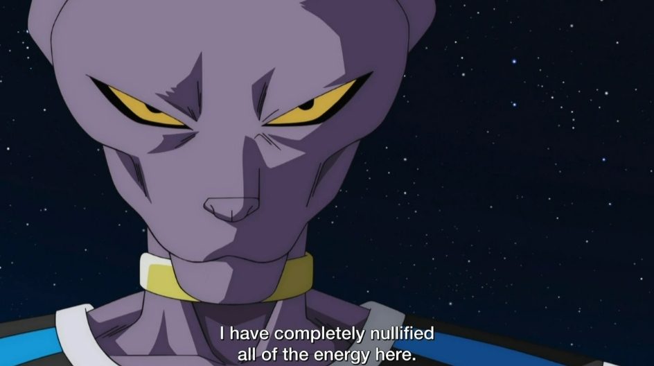

Goku đấu với Beerus, cả 2 dồn ki vào đòn ki blast và cố gắng đẩy ki blast đấy vào đối phương (Goku cố chưởng đòn ki blast đó về phía Beerus và ngược lại, Beerus cũng cố đẩy đòn ki blast đó về phía Goku), cuối cùng, đòn ki blast đấy nổ và tạo ra 1 làn sóng shockwave (shockwave - sóng xung kích, hiệu ứng năng lượng lan ra từ điểm va chạm).
Có rất nhiều statement rằng đòn ki blast đấy có thể phá hủy vũ trụ
Statement 1:

Statement 2:

Beerus nói rằng ta có thể vô hiệu hoá các đòn năng lượng, bao gồm cả đòn ki blast đó

Vì Beerus là người vô hiệu hoá đòn ki blast đó, nếu không vũ trụ sẽ bị hủy diệt, mà đòn ki blast có speed inf, tức là Beerus ít nhất cũng phải có speed inf thì mới kịp null trước khi vũ trụ bị hủy diệt
=>> Beerus có speed inf